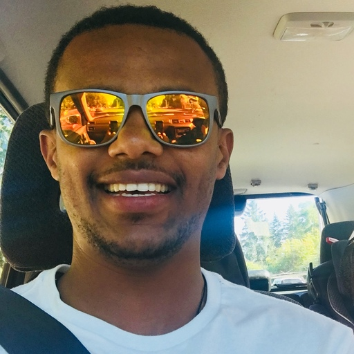

|  |
Eyob Tamir |


|
Eyob Tamir is currently a full-stack javascript student at code fellows, owner Bolt trucking business in
Seattle. He is originally from Ethiopia, his favorites hobbies are watching, playing soccer ⚽and go
out to a local attractive place with a family and friends.
|
|
Matthew Johnson |
|
|
Matthew Johnson is a full stack developer currently training at Code Fellows. He has lived around the county
and world and worked in a variety of fields including sales, security, communications, and psychological
operations. He has been living in the Seattle area since 2007 and in his off time attempts to corral two
small humans and is involved with urban policy advocacy (especially zoning and public transit), LGBTQ
outreach and arguing with people that are wrong on the internet. He is a soccer fan (Sounders and
USMNT/USWNT) as well as of the Auburn Tigers. WAR EAGLE!
|
 |
Patrick Lathrop |
|
|
Patrick has lived and traveled around the world and chose to call the most beautiful place in the world
home, the Pacific Northwest 🌦. He enjoys hiking Washington's many trails, trying his luck ☘ at
gold panning ⚒, and cheering on the Seahawks and Sounders with family and friends.
|
.png)